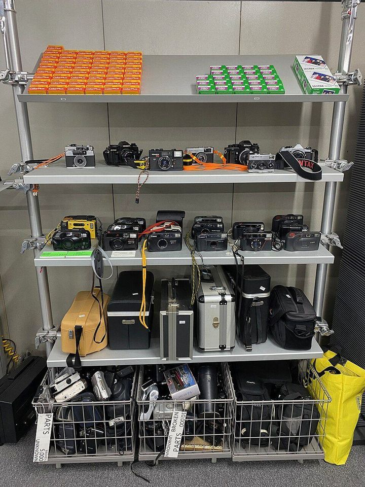
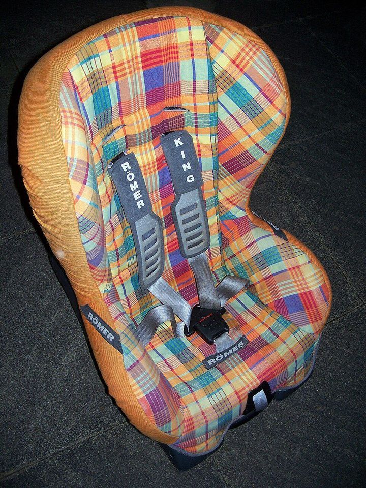
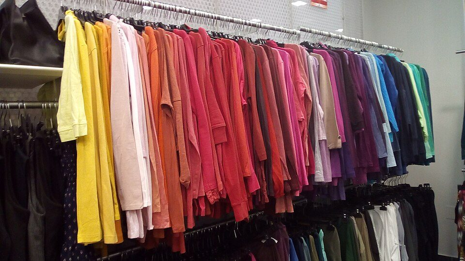

メルカリやヤフオクで買うとお得なものは？ 中古向きの品目、避けたいもの、手数料と補償（2026年版）
要点まとめ
フリマアプリやネットオークションでは、新品より安く買えることがあります。一方で、偽物や説明と違う品物をつかむ、安全に問題のある品物を買ってしまう、といったトラブルもあります。この記事では、メルカリとYahoo!オークション（旧ヤフオク!）で買う側として、どんなものが中古向きか、何を避けるべきか、費用と補償の仕組みを、公的機関の資料と公式ヘルプでまとめました。特定のサービスの利用をすすめるものではありません。
どれくらい使われているか
個人間のネット取引は、年2兆6,870億円
2025年のフリマ・ネットオークションなどの市場規模（推計）
経済産業省の推計では、2025年の個人間の電子商取引（CtoC-EC）の市場規模は2兆6,870億円で、前の年より6.34%増えました[6]。この数字には、実際には事業者が売り手の取引も一部含まれています[6]。
中古品を買う場所の1位は、フリマアプリ
ただし、1年間に中古品を買わなかった人が71.2%
環境省が約5万人に聞いた調査では、2024年の1年間に中古品を買った場所は「フリマアプリ」が12.7%で最も多くなりました[1]。一方、1年間に中古品を買わなかった人は71.2%でした[1]。
中古で買うと得になりやすいもの
環境省の調査（22品目から15品目を抜き出し。衣類・服飾品はブランド品を除く）[1]。
本・ソフト・ゲームは、中古でもよいという人が多い
エアコンや大型家電、スマホは中古を避ける人が多い
環境省の調査では、今後必要になったときに中古で買ってもよいと答えた人は、書籍が63.5%、ソフト・メディア類が53.4%と多くなりました[1]。一方、エアコン（13.6%）や、テレビ・洗濯機・冷蔵庫など（19.3%）、スマートフォン（22.5%）は少なめです[1]。
始めたばかりの趣味の道具を、中古で試す
メルカリの調査では、理由の1位は「初期費用が抑えられる」
メルカリが20〜60代に聞いた調査では、新しいことを始めるときにメルカリで物を買ったことがある人は74.6%でした[8]。理由は「初期費用が抑えられるから」が66.9%で最も多く、「合わなかったらまた売ればいいから」が27.9%でした[8]。なお、この調査はメルカリが自社で行ったものです。

中古では避けたいもの・買えないもの
| 品物 | 扱い |
|---|---|
| 医薬品・医療機器（コンタクトレンズなど） | 出品禁止。メルカリは「一般医療機器」の表示があるものなどを除く[9][3] |
| 小分け・詰め替えた化粧品 | 出品禁止[10][3] |
| 転売目的で入手したチケット | 出品禁止。メルカリは記名式のものなども禁止[11][3] |
| 偽ブランド品・正規品と確証のないもの | 出品禁止[2][12] |
| PSマークのないヘルメット・ベビーベッド・バッテリー | 出品禁止（法律で安全基準のマークが必要）[13][3] |
| 中古のモバイルバッテリー・非純正のバッテリー | メルカリは、新品に近くない外付けバッテリーと、非純正のバッテリーを禁止[13] |
| チャイルドシート | 事故歴がない、古すぎない、取扱説明書があるかなどを確認[14] |
コンタクトレンズは、薬機法で「高度管理医療機器」に分類されています[15]。
中古品の事故は、9割が火災
2020〜2024年の5年間で310件。電池の入った製品に注意
製品評価技術基盤機構（NITE）によると、2020〜2024年の5年間に通知があったリユース品の事故は310件で、約9割が火災でした[16]。そのうちリチウムイオン電池の入った製品による火災が100件ありました[16]。中古品はリコールの情報が届きにくいおそれがあるので、消費者庁のリコール情報サイトなどで確かめるよう呼びかけています[16][17]。
ヘルメットとベビー用品は、安全のマークと使用歴を見る
衝撃を受けたヘルメットは、見た目に問題がなくても使わない
製品安全協会は、自転車用ヘルメットについて、一度でも衝撃を受けたものは見た目に変化がなくても使わず、3年を目安に買い替えるよう案内しています[18]。ベビーベッドは、2025年12月25日から「子供PSCマーク」の表示が必要になりました[19]。チャイルドシートを譲り受けるときは、事故歴や強い衝撃がない、ひび割れがない、古すぎない、部品と取扱説明書がそろっているかを確かめます[14]。

偽ブランド品は、税関でも年3万件以上止まっている
2025年の輸入差止めは31,760件。3年続けて3万件超
財務省によると、2025年に税関で輸入を差し止めた知的財産の侵害品は31,760件で、3年続けて3万件を超えました[20]。国民生活センターには、フリマで買ったギターにシリアルナンバーが見当たらず、正規品ではないかもしれない、といった相談が寄せられています[21]。メルカリは、シリアルナンバーの写真がないものなどを「正規品と確証のないもの」として扱っています[12]。
買う側にかかるお金と、値下げの仕組み
| 支払い方法・金額 | 手数料 |
|---|---|
| クレジットカード、メルペイ残高、Apple Pay、FamiPay、メルペイのクレジット・定額払い | 無料[4] |
| コンビニ・ATM払い、キャリア決済：5,000円まで | 100円[4] |
| 同：5,001〜10,000円 | 200円[4] |
| 同：10,001〜20,000円 | 300円[4] |
| 同：20,001〜30,000円 | 500円[4] |
| 同：30,001〜40,000円 | 700円[4] |
| 同：40,001円以上 | 880円[4] |
ポイントなどを使った場合は、差し引いた後の金額で手数料が決まります[4]。Yahoo!オークションは、買う側の月額使用料は0円で、落札金額の10%の落札システム利用料は出品者が払います[22]。
メルカリの「値下げ依頼」は、承諾から24時間が期限
承諾されても、ほかの人に先に買われることがある
メルカリでは、買いたい金額を入れて出品者に値下げを依頼でき、承諾されればその金額で買えます[23]。300円以下の商品やオークション形式の商品などでは使えず、承諾から24時間以内に買わないと依頼は消えます[23]。承諾された商品でも、ほかの人が買うことはできます[23]。
ヤフオクは、上限額を決めて自動で入札できる
入札は取り消せない。即決価格があればすぐ落札できる
Yahoo!オークションでは、出せる上限の金額を「最高入札額」に入れると、その範囲内でシステムが自動で入札し、上限を超えて入札されることはありません[26]。即決価格がある商品は「今すぐ落札する」で落札できます[26]。入札は取り消せません[26]。入札する前に、商品の説明と送料をよく確かめておくと安心です（筆者の見解）。
トラブルを防ぐには
フリマの相談は、2025年度に4,855件
相手はプロの事業者ではなく、個人どうしの取引
国民生活センターの集計では、2025年度の「フリマサービス」の相談は4,855件でした（2024年度は5,638件）[27]。この数は、販売方法に問題があると分類された相談だけを数えたものです[27]。国民生活センターは、フリマサービスの取引は個人どうしの取引で、相手はプロの事業者ではないと注意しています[28]。
届いたら、評価する前に中身を確かめる
問題があれば「受取評価」をせずに、事務局に連絡する
メルカリの購入者ガイドラインでは、届いた商品に問題があった場合は「受取評価」をせずに対応するよう求めています[29]。サイズの誤差やイメージ違い、着払いの見落としなど、買う側の都合による返品はできません[29]。Yahoo!オークションでも、代金はいったん運営会社が預かり、受け取りの連絡をした後に出品者に支払われます[30]。
| サービス | 内容 | 主な条件 |
|---|---|---|
| メルカリ 全額補償サポート（2025年7月〜） | 当事者間で解決が難しいとき、買った代金を上限なしで補償[31] | 本人確認、メルカリ便の利用、配達完了の翌日から14日以内の問い合わせなど5つ[31] |
| Yahoo!オークション 商品満足サポート | 落札代金の100%をPayPayポイントでお見舞い[30] | 年1回、上限1万円。審査がある[30] |
メルカリとヤフオクの違い
| 項目 | メルカリ | Yahoo!オークション |
|---|---|---|
| 価格の決まり方 | 出品者が決めた価格で買う。値下げ依頼の機能がある[23] | 入札で決まる。即決価格のある商品もある[26] |
| 買う側の手数料 | カード払いなどは無料、コンビニ・ATM払いは100〜880円[4] | 月額使用料0円[22] |
| 代金の受け渡し | 運営会社が代金を預かり、購入者の評価の後に出品者が振込を申請[28] | 受取連絡の後に出品者へ入金[30] |
「ヤフオク!」は、2023年11月1日に「Yahoo!オークション」に名前が変わりました[32]。

今回確認できなかった点
- メルカリ・Yahoo!オークションの、品目やブランドごとの売れた価格と新品価格の差を示す公式データ
- Yahoo!オークションで、買う側に付くPayPayポイントの率と条件
- 個人間の取引ではクーリングオフや消費者契約法が使えない、と明記した公的な資料
- ベビーカーの中古についての公的な注意喚起
- 中古品を買う理由として「安いから」を挙げた人の割合の、新しい公的なデータ
関連する記事
出典（32件）
閲覧日はいずれも2026年11月10日
- 令和6年度 リユース市場規模調査 報告書（環境省）
- ヘルプ「禁止されている出品物」（メルカリ）
- Yahoo!オークションガイドライン細則（LINEヤフー）
- ヘルプ「メルカリの手数料」（メルカリ）
- 見守り新鮮情報 第536号 フリマサービスのトラブルに注意！（2026年3月5日）（国民生活センター）
- 令和7年度電子商取引に関する市場調査の結果を取りまとめました（2026年10月21日）（経済産業省）
- 物価高とリユース活用に関する意識・実態調査（2026年7月14日）（メルカリ）
- 物価高と新しい趣味や習い事に関する調査（2026年5月18日）（メルカリ）
- ヘルプ「医薬品、医療機器」（メルカリ）
- ヘルプ「許可なく製造したり小分けした医薬部外品、化粧品類」（メルカリ）
- ヘルプ「チケット類」（メルカリ）
- ヘルプ「偽ブランド品、正規品と確証のないもの」（メルカリ）
- ヘルプ「危険物や安全性に問題があるもの」（メルカリ）
- チャイルドシートに関するQ&A（国土交通省）
- 届出等が必要となる医療機器の販売事例（東京都保健医療局）
- 製品安全情報マガジン Vol.496「リユース品の事故」（2026年3月10日）（製品評価技術基盤機構（NITE））
- リコール情報サイト このサイトについて（消費者庁）
- メールマガジン第71号「注意しましょう。自転車用ヘルメットの安全な使い方！」（2023年4月6日）（製品安全協会）
- 子ども安全メール Vol.677「子供PSCマーク」がはじまりました！（2026年1月23日）（消費者庁）
- 令和7年の税関における知的財産侵害物品の差止状況（2026年3月6日）（財務省）
- 購入・出品した商品が偽物？！フリマサービスのトラブルに注意！（2025年9月2日）（国民生活センター）
- Yahoo!オークション ご利用ガイド「ご利用料金」（LINEヤフー）
- ヘルプ「値下げ依頼について」（メルカリ）
- ヘルプ「取引マナー」（メルカリ）
- ヘルプ「メルカードについて」（メルカリ）
- Yahoo!オークション 落札ガイド「入札・落札する」（LINEヤフー）
- 2025年度 全国の消費生活相談の状況（2026年8月5日）（国民生活センター）
- 相談急増！フリマサービスでのトラブルにご注意（2018年2月22日）（国民生活センター）
- ヘルプ「購入者ガイドライン」（メルカリ）
- Yahoo!オークション 安心・安全のための3つの取り組み（LINEヤフー）
- 「全額補償サポートプログラム」を7月1日より開始（2025年7月1日）（メルカリ）
- ヤフオク!とPayPayフリマが本日「Yahoo!オークション」「Yahoo!フリマ」に名称変更（2023年11月1日）（LINEヤフー）
写真・画像の出典（4件）
- 積み重なった本
写真: Nenad Stojkovic／Wikimedia Commons（CC BY 2.0） - 中古のカメラを並べた店の棚
写真: Sgroey／Wikimedia Commons（CC BY-SA 4.0） - チャイルドシート
写真: Cschirp／Wikimedia Commons（CC BY-SA 2.5） - 色ごとに並べた古着
写真: MAKY.OREL／Wikimedia Commons（CC BY-SA 4.0）